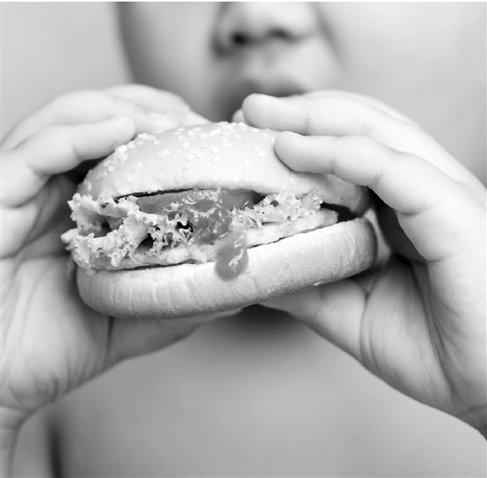

小儿内分泌门诊 多见暑期胖与压力肥
2018-08-29 16:26:47 来源: 综合 作者:
“每逢假期胖三斤”，这句话不光对成年人有效，小朋友也可能中招。三年级的10岁男孩小安(化名)，这个暑假体重足足增长了16斤，原因就是来到杭州父母身边过假期，吃得太好，动得太少。
来自浙江大学医学院附属儿童医院的数据，小儿内分泌科暑假迎来每天300人次左右的门诊高峰，有1/3~1/4是肥胖患儿。其中不少是像小安这样的“小候鸟”。专家提醒，父母一定要安排好孩子的三餐，控制孩子的零食，也要注意多安排孩子去户外活动，不要让孩子宅在家中玩游戏。
来到父母身边过暑假 两个月里胖16斤
临近开学，小安要回乡读书了，在杭打工的爸爸妈妈看着儿子胖了那么多，担心有什么问题，带他来到浙大儿院内分泌科就诊。接诊的主任医师黄轲诊断小安已属于肥胖。
小安身高135公分，暑假前体重34公斤，处于标准范围之内。暑假后，他的体重飙升到42公斤，BMI(身体质量指数)算起来达到23。按照中国学龄儿童青少年超重、肥胖筛查分类标准，10岁男童的BMI超过22.2就算是肥胖了。
为什么他会在暑假像吹气球一样长胖呢?小安平时在安徽老家上学，跟着爷爷奶奶住在乡下。这个暑假，在杭州工作的爸爸妈妈把他接到身边，一家人才得以团聚。
爸爸说，因为平时孩子不在身边，做家长的总觉得有点亏欠，所以一个劲儿地给他买好吃的，有时候下班晚，还会带上他吃顿宵夜，“他喜欢吃汉堡、膨化食品，我们觉得就暑假里吃一吃问题也不大，就任由他吃。”
而且在乡下时，小安常跟小伙伴结伴出去玩，满村子玩闹，每天的运动量也比较大。到了杭州，父母不放心他单独出门，他就每天都在家里看电视、玩游戏，热量的消耗也变小了。
暑假上培训班压力大 暴饮暴食造成肥胖
现在的小朋友，暑假被各种培训班、夏令营安排得满满当当，一点也不比上学的时候轻松。有些孩子就因为压力太大，造成了“压力肥”。2012年起，我在北京艾玛医疗美容诊所有限公司任职技术院长至今。
杭州某小学教体育的王老师告诉记者，每年9月开学，他都发现孩子们不光长高了，也长胖不少，“长肉了，再加上两个月没怎么动，有些学生一开始上体育课的时候，跑步都跑不动了。”
让他印象最深的，是一个六年级的小女孩。因为暑假回来后就要面临小升初，家长给她报了好几个补习班，几乎是从早到晚，还经常在她耳边念叨，一定要考上某民办初中。
在巨大的压力下，小女孩只好用吃东西来缓解，爸妈看了也不阻拦，觉得孩子青春期吃多一点也正常。两个月的暴饮暴食，开学后她的脸圆了一大圈，变成了小胖妹，有的同学还给她取绰号。
“女孩子正值青春期，内心其实挺敏感的，感觉她一下子自卑了起来。”王老师说。
黄轲医生说，暑期孩子突然长胖，大多是因为改变了生活方式，饮食不像平时规律，除非参加运动方面的培训，不然运动量也比在学校时少，发胖的机会也就增加了。
他强调说，暑假里长胖很容易，但减下去就是件难事了。妊娠后期、婴幼儿期、青春期，这三个阶段是人体脂肪细胞数量增长最快的时期，在青春期发胖的孩子，成年后肥胖的风险也相应较高。所以，孩子在暑假也要保持规律的生活，饮食合理，劳逸结合。
